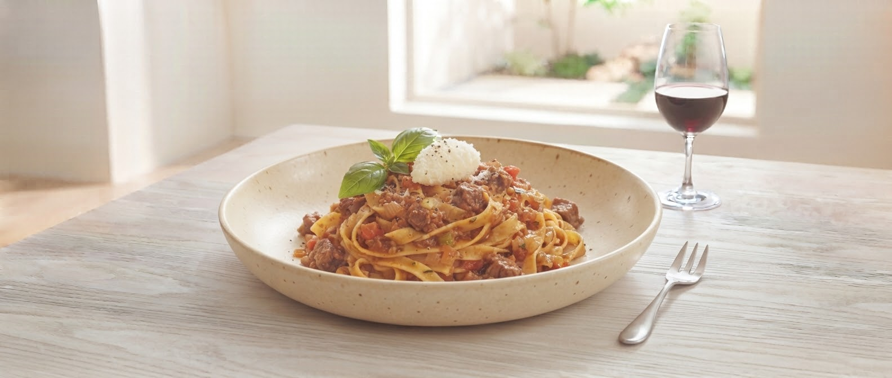
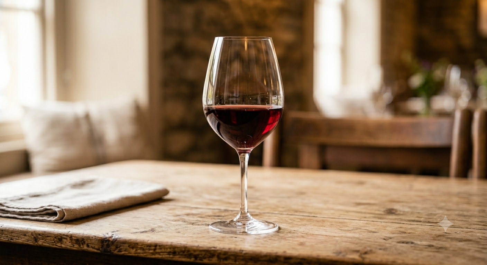
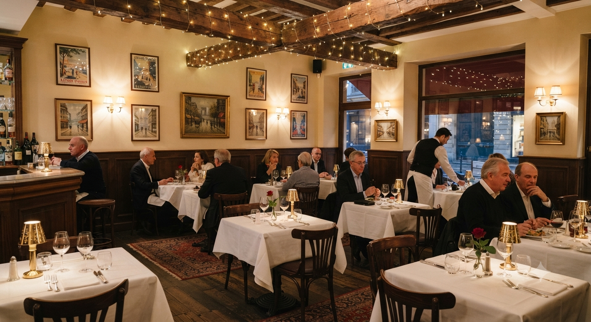
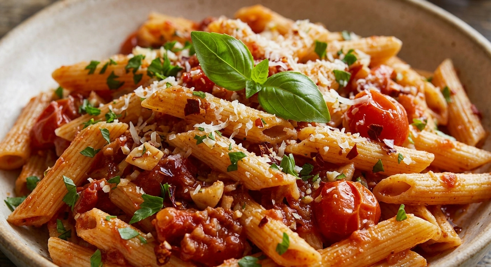

Owner
Message
Message
なぜ、夜は完全予約制なのか。
それは、お客様一人ひとりに「最高の状態」でソースと麺を提供するためです。
私たちは単にお腹を満たす場所ではありません。手間を惜しまないグリル料理、厳選されたフルーティーワイン、そこでこだわり抜いた生パスタ。そのすべてが調和する瞬間を、落ち着いた空間でじっくり味わっていただきたいのです。
"Travelin' to Gourmet."
挽き肉ゴロゴロの衝撃、もちもち生パスタの誠意。
Kata's Kitchen TRAVELIN'が贈る、真のボロネーゼ。
REASON 01
機械任せにはしない。その日の湿度に合わせて調整する手作り生パスタ。噛むほどに押し返すような弾力と、小麦本来の香りが鼻を抜けます。
REASON 02
「ひき肉ゴロゴロ系」のファンが唸る肉感。じっくり時間をかけて煮込んだソースは、もはやパスタではなく「肉料理」としての風格を纏います。
それは、お客様一人ひとりに「最高の状態」でソースと麺を提供するためです。
私たちは単にお腹を満たす場所ではありません。手間を惜しまないグリル料理、厳選されたフルーティーワイン、そこでこだわり抜いた生パスタ。そのすべてが調和する瞬間を、落ち着いた空間でじっくり味わっていただきたいのです。
"Travelin' to Gourmet."
Customer Reviews
「クリームの濃厚さに感動のトリハダが止まらない。間違いなくリピ確定な美味しさです!」
山形市 T様
★★★★★
「パスタの麺がもちもちで感動。ひき肉ゴロゴロ系のボロネーゼ、お肉も柔らかくて最高でした。」
上山市 K様
★★★★★
「汁だくパスタの後にリゾットが出てきて驚愕。最後までペロリといける魔法のパスタ。」
山形市 A様
★★★★★

もちもちの食感は、職人のこだわりから生まれます。

フルーティーなワインがパスタの旨味をさらに引き立てる。

デートや記念日に。落ち着いた大人の隠れ家。
Kata's Kitchen TRAVELIN'が贈る、新たな食体験の試み。
「こんなサービスがあったら」を形にする新しいプロジェクトを進行中です。
その日の気分や好みのテイストを選ぶだけで、シェフ渾身の極上パスタと最適な手打ち生麺のペアリングをAIが導き出します。
▼ 今日の気分を一つ選んでみてください（体験版）
「どのパスタも捨てがたい」「麺の違いをもっと楽しみたい」そんな声にお応えする、半分量ずつの2種類の麺とソースを一皿で贅沢に楽しむ至高のデュアルプレート。

〒990-0813 山形県山形市桧町３丁目４−１９
駐車場：店舗前に約5台分完備
山形の夜を、特別なものに。ご予約はお電話にて承ります。
山形県山形市桧町３丁目４−１９
ランチ / ディナー(夜のみ完全予約制)
定休日: 水曜日 | 現金決済のみ
最新情報はInstagramで更新中
Instagram Official →